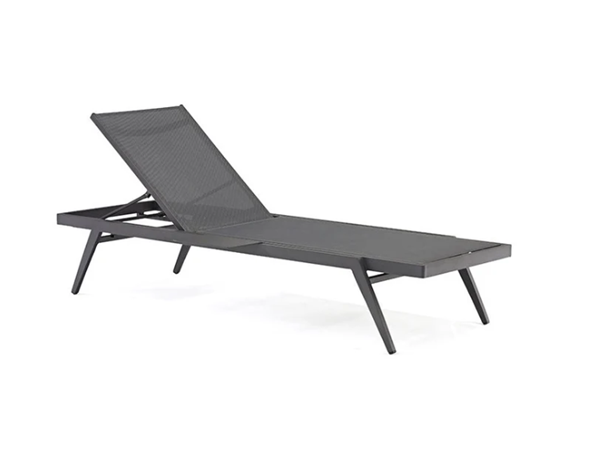
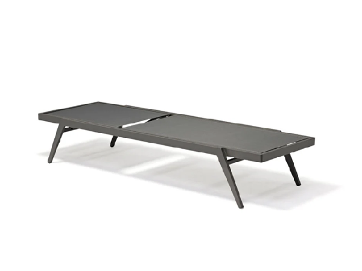
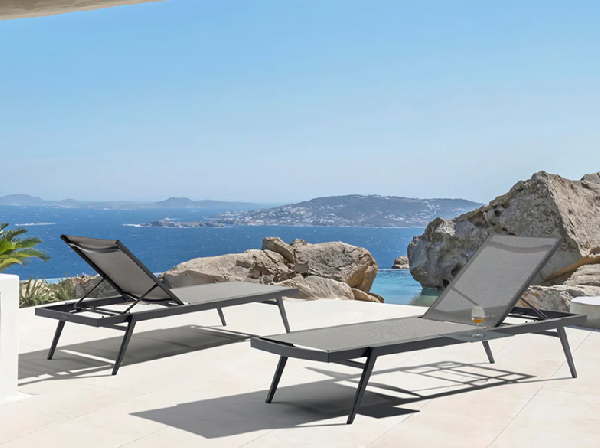
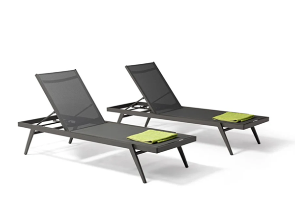

納入規格前請確認
以下條件請依實際訂單、交貨地點與專案需求，在納入規格或下單前確認。
- 目前供應狀況、最低訂購量與專案交期
- 表面處理、網布、編織繩或坐墊顏色及替換選項
- 依現場曝曬條件確認保養與維護需求
- 專案要求的測試、認證、保固與備品支援
- 交貨動線、組裝方式與安裝責任




型號: SWF-91704140
STRING 系列低座戶外躺椅，採用碳灰色鋁合金框架與 Batyline 網布。200 公分的椅身深度，適合飯店泳池、度假村與商業休憩空間進行全身躺臥配置。
洽詢專案報價本頁提供尺寸、材質、產地與產品圖片，供專案選品與評估使用；價格及交易條件將依每次詢價內容確認。
以下條件請依實際訂單、交貨地點與專案需求，在納入規格或下單前確認。
提供以下資訊，Sunnyward 才能判斷專案條件，而不只是回覆缺乏前提的單一價格。